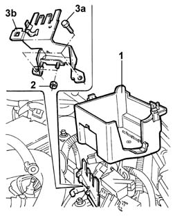
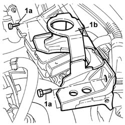
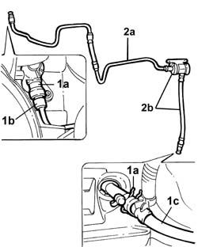

1820B46 SUPPLY PIPE FROM MASTER CYLINDER (PUMP) - R.R.
- Path
- Procedures > 18 CLUTCH > 1820 clutch release controls > 1820B CLUTCH RELEASE HYDRAULIC OPERATION > 1820B46 SUPPLY PIPE FROM MASTER CYLINDER (PUMP) - R.R.
- Kind
- repair procedure (removal / refitting; the operation number is the code)
- Applies to
- engines: 2.0 TB, 2.4 20V, 2.4 JTD 10V, 2.4 JTD 20V; all production periods
- Interactive page
- https://sloeber94.github.io/elrnDB-lThss/en/#/108801
Applies to: engines: 2.0 TB, 2.4 20V, 2.4 JTD 10V, 2.4 JTD 20V; all production periods
 Removing
Removing
 Refitting
Refitting- Position the vehicle on a lift.
- Disconnect the negative battery terminal.
See in Op. 7040D50 ENGINE COMPARTMENT UPPER SOUND INSULATION SHIELD - R.R.
Applies to: engines: 2.4 JTD 10V; all production periods
Applies to: engines: 2.4 20V; all production periods
Applies to: engines: 2.0 TB; all production periods
See in Op. 1048B44 RIGID air supply PIPE from heat exchanger to intake manifold - R.R.
-
See in Op. 1016A40 Ignition COIL COVER on cylinder head - R.R.
-
See in Op. 1048A50 air inlet pipe to turbocharger - r + r
-
See in Op. 1048A21 AIR INLET HOSE FROM INTAKE TO FILTER - R.R.
-
See in Op. 1048A10 COMPLETE AIR FILTER -R.R.
See in Op. 1048A54 TURBOCHARGER air inlet HOSE from rigid pipe - R.R.
Applies to: engines: 2.4 JTD 20V; all production periods
See in Op. 7055B54 PROTECTION/GUARD under engine - R.R.
See in Op. 1016A10 SOUND-PROOFING COVER - R.R.
See in Op. 1048B44 RIGID air supply PIPE from heat exchanger to intake manifold - R.R.
Applies to: engines: 2.0 TB, 2.4 20V, 2.4 JTD 10V, 2.4 JTD 20V; all production periods
See in Op. 3330C40 brake fluid reservoir plug - r + r
See in Op. 3330C30 brake fluid reservoir - r + r and wash inside
See in Op. 5505A13 Additional junction unit in engine compartment - R.R.
-
1. Remove the casing containing the engine compartment additional junction unit.
2. Undo the nut fixing the damper to the casing mounting bracket.
3. Undo the fixing bolts (3a) and remove the mounting bracket (3b).

Applies to: engines: 2.0 TB, 2.4 20V, 2.4 JTD 10V, 2.4 JTD 20V; all production periods
See in Op. 1008A42 Power unit RIGID MOUNT - GEARBOX side - R and R
See in Op. 1008B30 Gearbox side mount FLEXIBLE BLOCK/S - Replace
1. Undo the fixing bolts (1a) and remove the bracket (1b) securing the flexible mounting.

Applies to: engines: 2.0 TB, 2.4 20V, 2.4 JTD 10V, 2.4 JTD 20V; all production periods
1. Lift up the fastening springs (1a) and release the pipe from the connectors on the clutch master cylinder (1b) and the actuator piston (1c).
2. Remove the pipe assembly and separate the supply pipe from the pump (2b) from the vibration damper (2c) at the bench.

Applies to: engines: 2.0 TB, 2.4 20V, 2.4 JTD 10V, 2.4 JTD 20V; all production periods
Refitting
Removing- Tighten the connector joining the supply pipe to the damper and fit the complete pipe in the special housing in the engine compartment.
- Connect the pipe to the master cylinder and to the actuator cylinder.
- Fit the mounting bracket for the flexible mounting and tighten the fixing bolts to torque.
Applies to: engines: 2.0 TB, 2.4 20V, 2.4 JTD 10V, 2.4 JTD 20V; all production periods
See in Op. 1008B30 Gearbox side mount FLEXIBLE BLOCK/S - Replace
See in Op. 1008A42 Power unit RIGID MOUNT - GEARBOX side - R and R
- Fit the mounting bracket for the additional junction unit in the engine compartment.
- Tighten the nuts fixing the damper to the additional junction unit mounting bracket to torque.
- Fit the casing containing the engine compartment additional junction unit
See in Op. 5505A13 Additional junction unit in engine compartment - R.R.
See in Op. 3330C30 brake fluid reservoir - r + r and wash inside
Applies to: engines: 2.4 JTD 10V; all production periods
Applies to: engines: 2.4 20V; all production periods
Applies to: engines: 2.0 TB; all production periods
See in Op. 7055B54 PROTECTION/GUARD under engine - R.R.
-
See in Op. 1048A54 TURBOCHARGER air inlet HOSE from rigid pipe - R.R.
-
See in Op. 1048A10 COMPLETE AIR FILTER -R.R.
-
See in Op. 1048A21 AIR INLET HOSE FROM INTAKE TO FILTER - R.R.
-
See in Op. 1048A50 air inlet pipe to turbocharger - r + r
See in Op. 1016A40 Ignition COIL COVER on cylinder head - R.R.
See in Op. 1048B44 RIGID air supply PIPE from heat exchanger to intake manifold - R.R.
Applies to: engines: 2.4 JTD 20V; all production periods
See in Op. 1048A50 air inlet pipe to turbocharger - r + r
-
See in Op. 1048B44 RIGID air supply PIPE from heat exchanger to intake manifold - R.R.
Applies to: engines: 2.0 TB, 2.4 20V, 2.4 JTD 10V, 2.4 JTD 20V; all production periods
See in Op. 0010T67 HYDRAULIC CLUTCH SYSTEM - Bleed air
See in Op. 7040D50 ENGINE COMPARTMENT UPPER SOUND INSULATION SHIELD - R.R.
- Remove the vehicle from the lift.
- Connect the negative battery terminal.
Topics linked from this page (20)
- 0010T67 HYDRAULIC CLUTCH SYSTEM - Bleed air
- 1008A42 Power unit RIGID MOUNT - GEARBOX side - R&R
- 1008B30 Gearbox side mount FLEXIBLE BLOCK/S - Replace
- 1016A10 SOUND-PROOFING COVER - R.R.
- 1016A40 Ignition COIL COVER on cylinder head - R.R.
- 1016A10 SOUND-PROOFING COVER - R.R.
- 1048A50 air inlet pipe to turbocharger - r + r
- 1048B44 RIGID air supply PIPE from heat exchanger to intake manifold - R.R.
- 1048A10 COMPLETE AIR FILTER -R.R.
- 1048A21 AIR INLET HOSE FROM INTAKE TO FILTER - R.R.
- 1048A28 vacuum air circuit resonator pipe - r+r
- 1048A50 air inlet pipe to turbocharger - r + r
- 1048A54 TURBOCHARGER air inlet HOSE from rigid pipe - R.R.
- 1048B44 RIGID air supply PIPE from heat exchanger to intake manifold - R.R.
- 1048A50 air inlet pipe to turbocharger - r + r
- 3330C30 brake fluid reservoir - r + r and wash inside
- 3330C40 brake fluid reservoir plug - r + r
- 5505A13 Additional junction unit in engine compartment - R.R.
- 7040D50 ENGINE COMPARTMENT UPPER SOUND INSULATION SHIELD - R.R.
- 7055B54 PROTECTION/GUARD under engine - R.R.